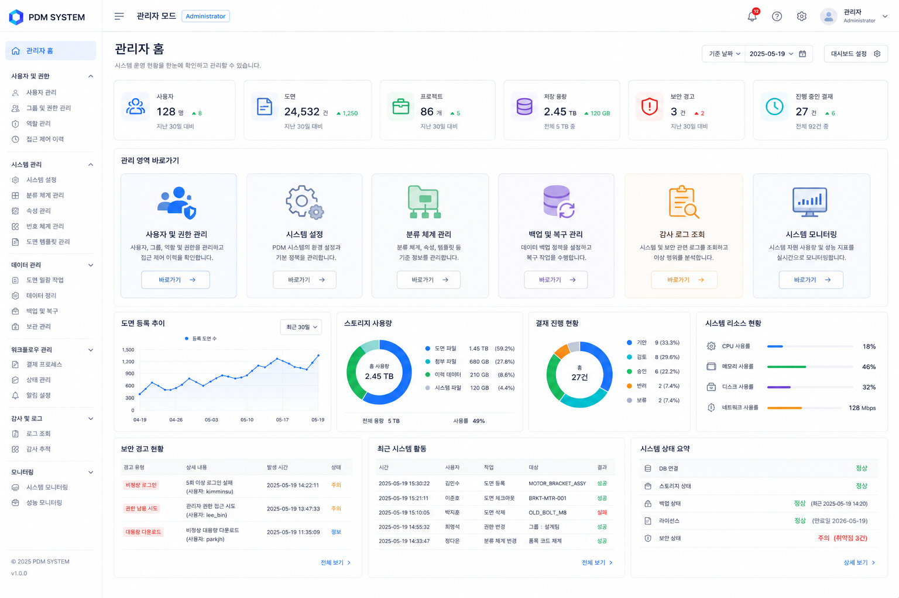
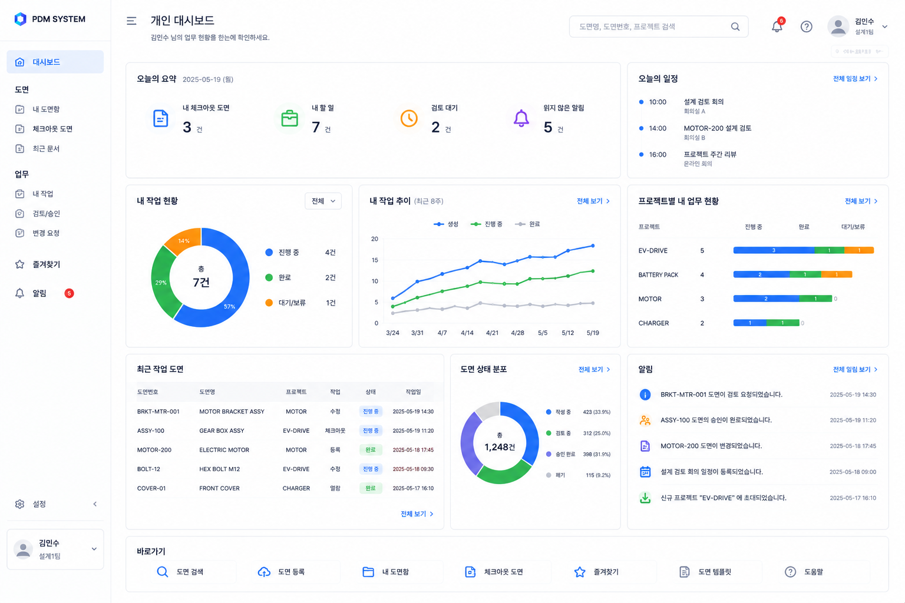
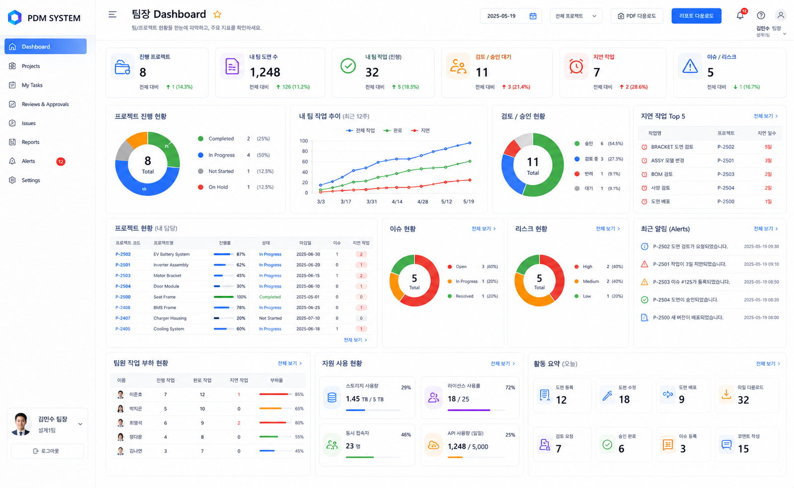
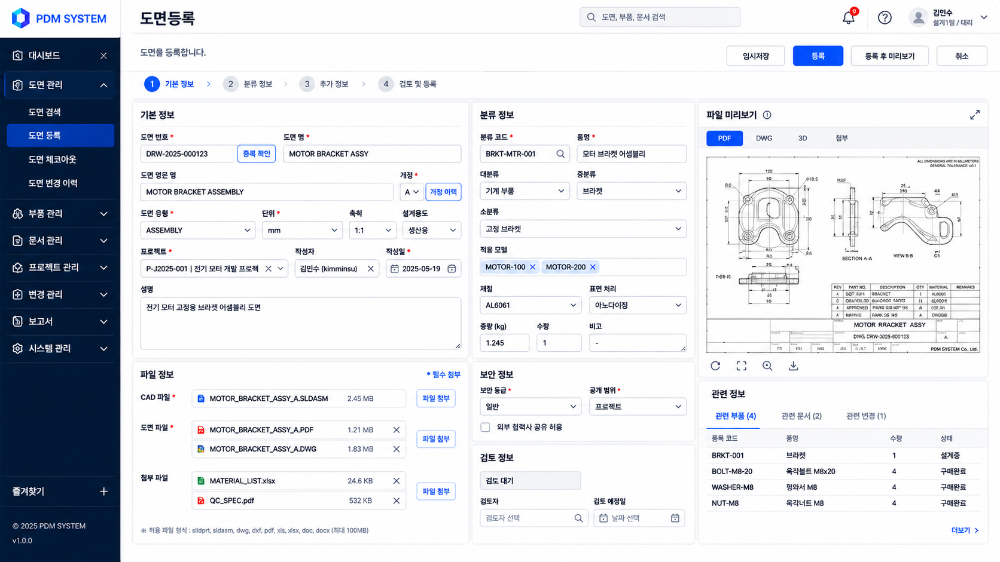
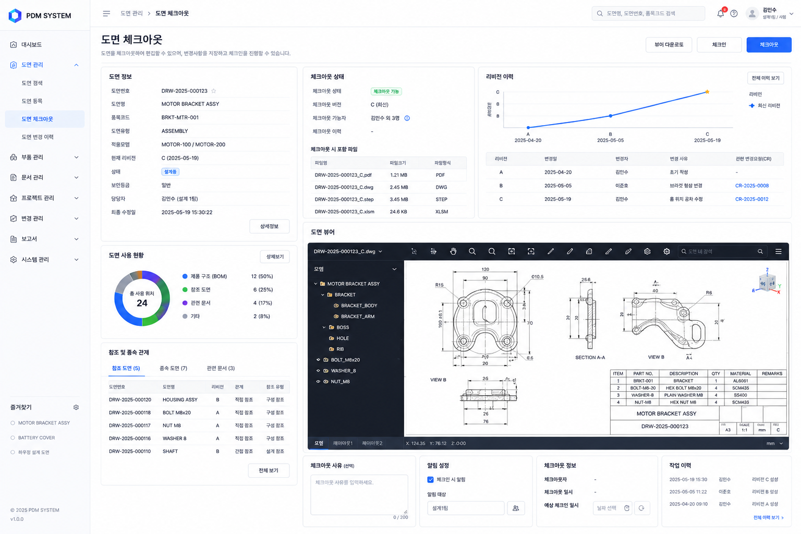
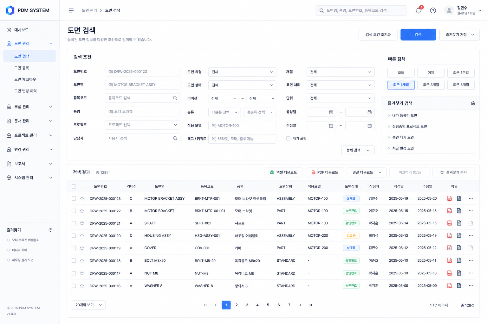
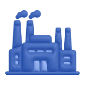

설계 데이터의 혼란을
하나의 질서로
Clip PDM은 CAD 도면·BOM·기술문서를 단일 저장소에 통합하고, 체크인/아웃·버전 관리·결재 워크플로를 하나의 플랫폼에서 제공합니다.

설계부터 배포까지 한 흐름으로
도면 저장·검색·버전·변경 이력을 하나로 연결

중앙 집중식 저장소
도면·부품·문서를 단일 저장소에서 관리.

자동 버전 관리
Check-in/out으로 리비전 이력 자동 추적.
Multi-BOM 연계
E-BOM·M-BOM·S-BOM 변경 영향 함께 검토.
설계변경(ECO) 자동화
ECR 접수부터 승인·배포까지 흐름 자동화.
접근 제어 · 배포
역할 기반(RBAC) 권한으로 배포 범위 제어.

주요 CAD 시스템 연동
AutoCAD·SolidWorks·CATIA 등 CAD 연동.
실제 화면 기준으로
업무 흐름을 보여줍니다
최신 PDM 화면 이미지에 맞춘 역할별 대시보드와 도면 관리 화면
내 업무와 도면을
한 화면에서 확인
내 체크아웃 도면, 할 일, 검토 대기, 읽지 않은 알림을 요약하고 오늘 일정과 프로젝트별 업무 현황을 함께 보여줍니다. 최근 작업 도면과 도면 상태 분포까지 개인 업무 기준으로 바로 확인합니다.

팀 프로젝트와 리스크를
한눈에 점검
진행 프로젝트, 팀 도면 수, 진행 중인 팀 작업, 검토·승인 대기, 지연 작업, 이슈·리스크를 상단 지표로 확인합니다. 프로젝트 진행 현황, 팀원 작업 부하, 자원 사용량, 오늘 활동 요약까지 팀장 관점으로 묶어 보여줍니다.

도면 파일과 분류 정보를
단계별로 등록
기본 정보, 분류 정보, 추가 정보, 검토 및 등록 단계로 도면을 입력합니다. CAD·PDF·DWG·첨부 파일을 함께 올리고, PDF/DWG/3D 미리보기와 관련 부품·문서·변경 정보를 같은 화면에서 확인합니다.

시스템 운영 현황을
관리자 기준으로 점검
사용자, 도면, 프로젝트, 저장 용량, 보안 경고, 진행 중인 결재를 상단 지표로 확인합니다. 권한·그룹·역할 관리, 분류 체계, 백업·복구, 감사 로그, 시스템 모니터링까지 운영자가 필요한 관리 영역으로 바로 이동합니다.
체크아웃 상태와
리비전 이력을 함께 관리
도면 정보, 체크아웃 가능 여부, 체크아웃 버전, 포함 파일, 리비전 이력을 한 화면에 표시합니다. 도면 뷰어에서 구조와 도면을 확인하고, 참조·종속 관계와 작업 이력까지 연결해 변경 흐름을 추적합니다.

E-BOM과 M-BOM의
차이를 표로 비교
Source E-BOM과 Target M-BOM을 선택해 구조 비교, 변경 요약, 수량 비교, 속성 비교, 텍스트 비교를 수행합니다. 추가됨, 삭제됨, 수정됨, 수량 변경 항목을 색상과 요약 지표로 구분하고 상세 정보와 최근 비교 이력까지 확인합니다.

조건 검색과 빠른 검색으로
도면을 찾습니다
도면번호, 도면명, 품목코드, 품명, 프로젝트, 담당자, 도면 유형, 상태, 리비전, 재질, 표면 처리, 생성일·수정일을 조합해 검색합니다. 빠른 기간 검색, 즐겨찾기 검색, 엑셀·PDF 다운로드, 일괄 다운로드와 비교하기 기능을 제공합니다.

도면 관리 흐름을 정리합니다
수치 과장보다 실제 운영에서 확인해야 할 변화에 집중합니다
시스템 사양
Clip PDM의 아키텍처 및 지원 환경
기존 시스템과 연동됩니다
기존 CAD·ERP·MES 환경을 그대로 유지하면서 Clip PDM을 도입할 수 있습니다
 AutoCAD
SolidWorks
CATIA
Creo / NX
ERP (SAP)
AutoCAD
SolidWorks
CATIA
Creo / NX
ERP (SAP)

MES도면 관리에
너무 많은 시간을 쓰고 있나요?
도면 검색, 승인, 변경 이력 관리를 하나의 흐름으로 정리하세요. 기존 CAD·ERP·MES 환경을 기준으로 도입 범위를 함께 설계합니다.